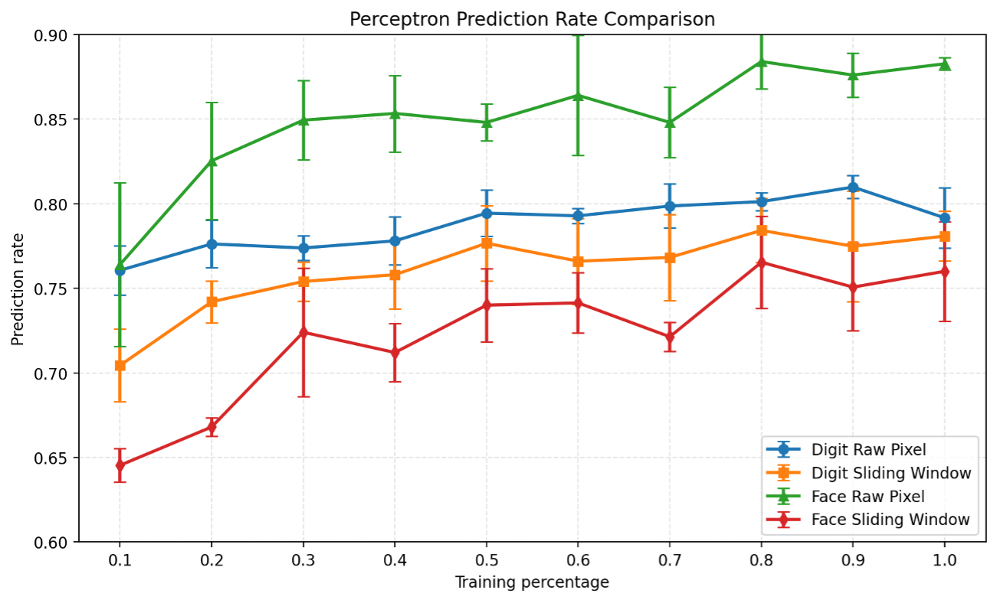

Machine Learning & Image Classification
Image Classification with Naive Bayes & Perceptron
A machine learning study comparing Naive Bayes and Perceptron classifiers on handwritten digit and face image datasets using multiple feature-extraction strategies.
Project Overview
This project explored supervised image classification by implementing Naive Bayes and Perceptron classifiers and testing them on handwritten digit and face image datasets.
I implemented the classification pipeline in Python, including data processing, feature extraction, model training, prediction, and performance evaluation. The experiments compared how each classifier responded to different amounts of training data and different feature representations.
Two feature-extraction strategies were evaluated: a raw-pixel representation and a sliding 3×3 window designed to capture local patterns within each image. The classifiers were then compared using classification accuracy, runtime, and variation across repeated experimental runs.
Feature Extraction
Before classification, each image was converted into a set of numerical features that the learning algorithms could use during training and prediction. I implemented two approaches to compare how feature representation affected classifier performance.
Raw Pixel Features
Each pixel was treated as an individual feature based on whether that location contained part of the image. This provided the classifiers with a direct representation of the original image data.
Sliding 3×3 Window
A 3×3 window moved across the image to create features representing small local regions. This approach captured relationships between neighboring pixels rather than evaluating every pixel independently.
Classification Algorithms
I implemented two supervised learning algorithms to compare different approaches to image classification. Both classifiers were trained and tested using the same digit and face datasets and the two feature representations.
Naive Bayes
The Naive Bayes classifier learned class probabilities from the training data and used the observed image features to calculate the most likely classification for each test image.
Perceptron
The Perceptron classifier learned a set of feature weights for each class. Predictions were made by scoring an image against each class, with weights updated during training whenever an image was classified incorrectly.
Experimental Results
Performance was evaluated across multiple training-set sizes and averaged across five runs. The experiments measured classification accuracy, runtime, and variation between runs for both the digit and face datasets.
Perceptron Advantage
The Perceptron generally achieved stronger classification accuracy on the handwritten digit dataset than Naive Bayes, particularly as more training data became available.
Naive Bayes Advantage
Naive Bayes generally performed better on the face dataset, showing that classifier effectiveness depended on the characteristics of the classification problem.
Training Cost
Perceptron performance came with a significant runtime cost. The 100% digit training experiment using raw-pixel features approached 45 seconds of runtime.
Perceptron Prediction Rate

Perceptron prediction rates generally improved as additional training data became available. Performance also varied between the digit and face datasets and between the raw-pixel and sliding-window feature representations.
Key Takeaways
This project demonstrated that classifier performance depends not only on the learning algorithm, but also on the dataset, feature representation, and amount of training data available. Neither classifier was universally strongest across both classification problems.
Naive Bayes generally performed better on face classification, while the Perceptron produced stronger results on handwritten digits. The Perceptron's improved digit performance also came with substantially greater runtime as the amount of training data increased.
Comparing raw-pixel and sliding-window features also demonstrated how feature engineering can influence classification behavior. More complex feature representations did not automatically produce better results, reinforcing the importance of evaluating feature design experimentally.